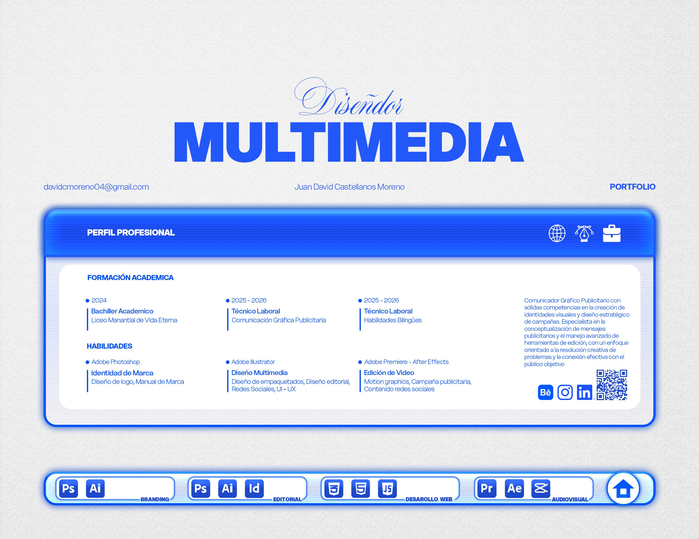
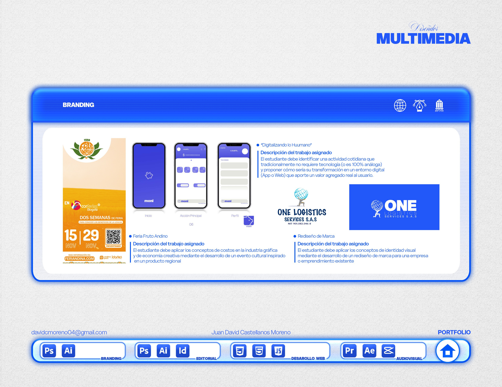
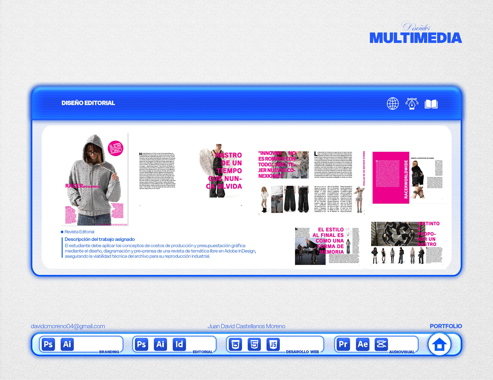
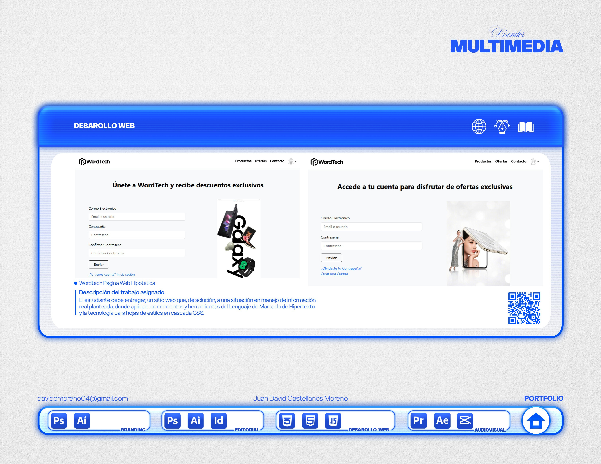
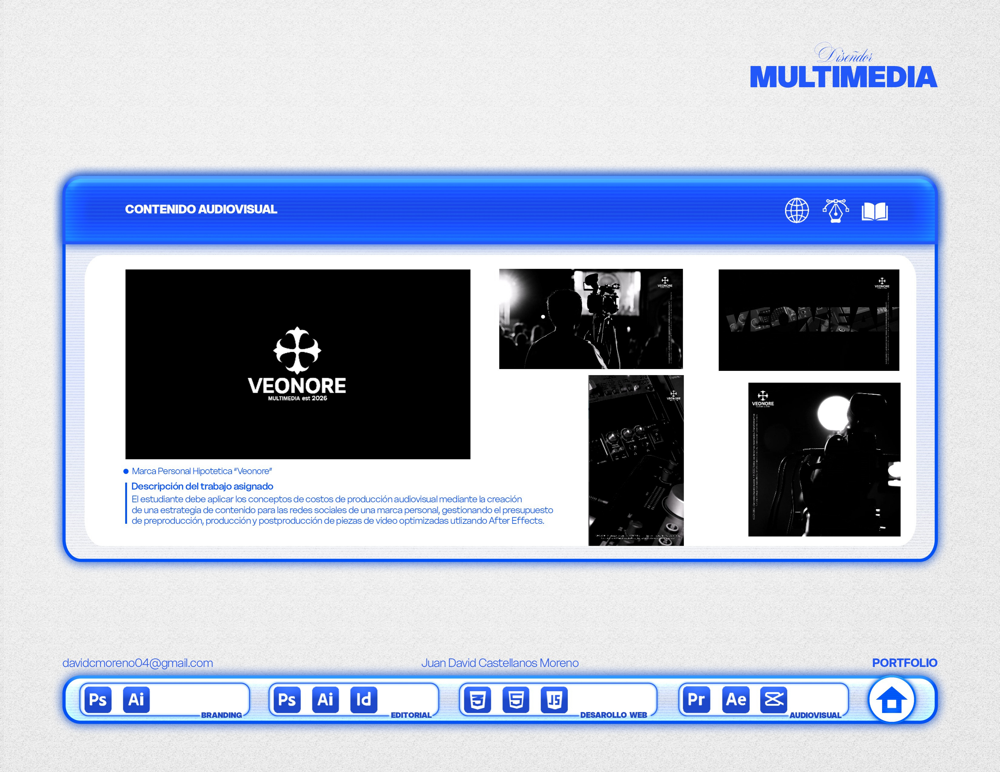

Juan David Castellanos Moreno — Comunicación Gráfica Publicitaria

Trayectoria en agencias, desarrollo de marcas y maquetación visual.

Conceptos creativos, identidad corporativa y campañas publicitarias.

Estrategia visual orientada a la conversión y branding corporativo.

Herramientas de software, aptitudes profesionales y canales de comunicación.